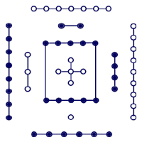
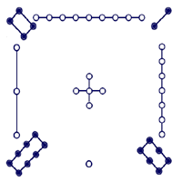
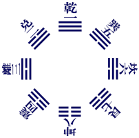
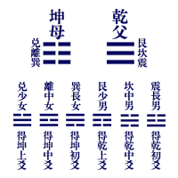

周易本義圖目
|

 河圖 |
河圖洛書
系辭傳曰：河出圖．洛出書．聖人則之．覆曰：天一．地二．天三．地地六．天七．地八．天九．地十．天數五．地數五．五位相得而各有合．天數二十有五．地數三十．凡天地之數．五十有五．此所以成變化．而行鬼神也．
|
|
|
伏羲先天八卦次序 系辭傳曰：易有太極．是生兩儀．兩儀生四象．四象生八卦．八卦定吉凶．吉凶生大業．邵子曰：一分為二．二分為四．四分為八也．說卦傳曰：易逆數也．邵子曰：乾一．兌二．離三．震四．巽五．坎六．艮七．坤八．自乾至坤．皆得未生之卦．若逆推四時之比也．后六十四卦次序放此． |
|
 |
伏羲先天八卦方位
說卦傳曰：天地定位．山澤通氣．雷風相薄．水火不相射．八卦相錯．數往者順．知來者逆．是故．易逆數也．雷以動之．風以散之．雨以潤之．日以烜之 |
|
 文王后天八卦次序
文王后天八卦方位 |
文王后天八卦 說卦傳曰：乾．健也．坤．順也．震．動也．巽．入也．坎．陷也．離．麗也．艮．止也．兌．說也．乾為馬．坤為牛．震為龍．巽為雞．坎為豕．離為雉．艮為狗．兌為羊．乾為首．坤為腹．震為足．巽為股．坎為耳．離為目．艮為手．兌為口．乾天也．故稱父．坤地也．故稱母．。震一索而得男。故謂之長男。巽一索而得女。故謂之長女。坎再索而男。故謂之中男。離再索而得女。故謂之中女。艮三索而得男。故謂之少男。兌三索而得女。故謂之少女。 |